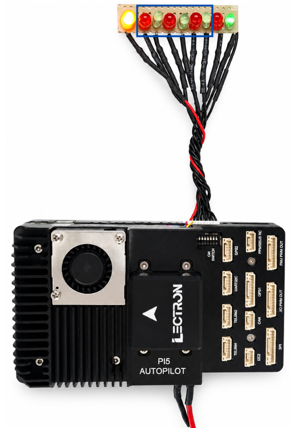
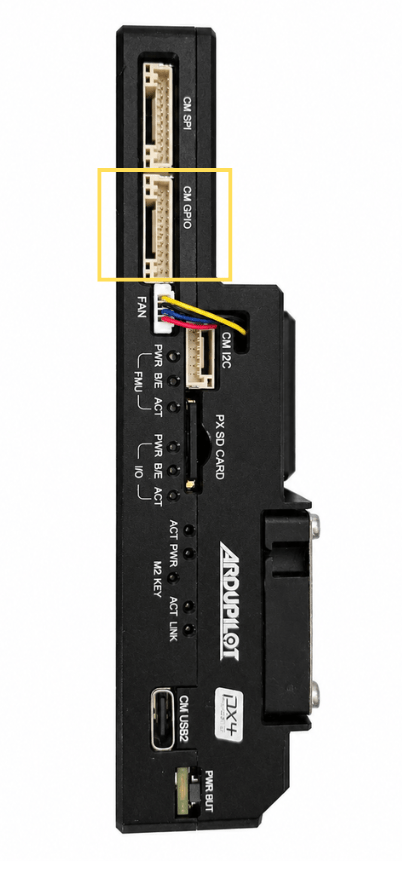
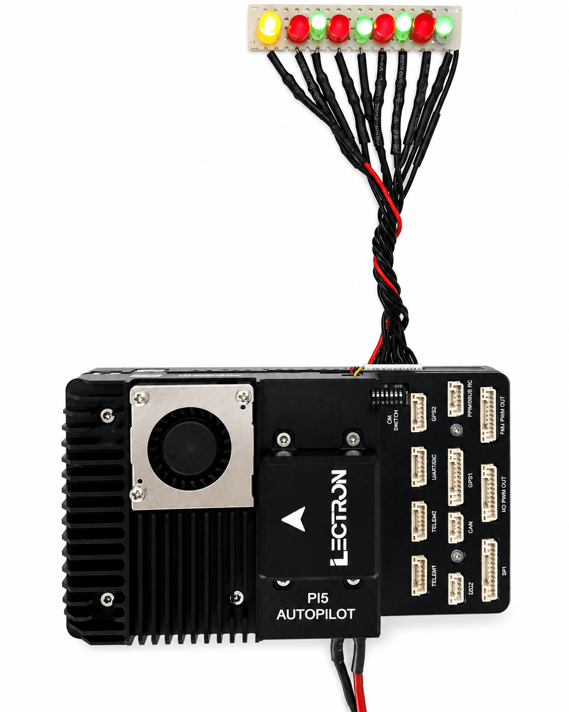

CM5 GPIO
General Purpose I/O — Hardware & Software Guide
| Platform | Raspberry Pi CM5 |
| OS | Ubuntu 24.04 LTS |
| Connector | SM10B-GHS (10-pin) |
Hardware Overview
The CM GPIO port is a 10-pin JST GH connector (SM10B-GHS) on the Lectron PI5 Autopilot board. It exposes six general-purpose I/O lines from the Raspberry Pi CM5, a 5 V power supply pin, and a ground reference. Pins 8 and 9 carry UART2 TX/RX and are not covered in this document.
Board Photos
The image below shows the CM GPIO connector with an LED test harness connected.

The connector is located on the board side panel:

Pin Assignment
The table below lists all 10 pins of the CM GPIO connector. The six GPIO pins are the focus of this document.
| Pin | Signal | Voltage | Direction | Notes |
|---|---|---|---|---|
| 1 | SYSTEM 5V | +5V | Power | Board supply voltage |
| 2 | CM5 GPIO22 | +3.3V | I/O | General purpose I/O |
| 3 | CM5 GPIO23 | +3.3V | I/O | General purpose I/O |
| 4 | CM5 GPIO24 | +3.3V | I/O | General purpose I/O |
| 5 | CM5 GPIO25 | +3.3V | I/O | General purpose I/O |
| 6 | CM5 GPIO26 | +3.3V | I/O | General purpose I/O |
| 7 | CM5 GPIO27 | +3.3V | I/O | General purpose I/O |
| 8 | CM5 UART2 TX | +3.3V | Output | UART2 transmit (not covered here) |
| 9 | CM5 UART2 RX | +3.3V | Input | UART2 receive (not covered here) |
| 10 | GROUND | GND | Power | Common ground reference |
UART2 Pins
Pins 8 and 9 (UART2 TX/RX) share the same connector but are documented separately in the UART interface guide.
Linux GPIO Interface
GPIO Chip
On Ubuntu 24.04 with the CM5, the main RP1 GPIO controller is exposed as gpiochip4. This is the chip that controls GPIO22–GPIO27.
$ sudo gpiodetect
gpiochip0 [gpio-brcmstb@107d508500] (32 lines)
gpiochip1 [gpio-brcmstb@107d508520] (4 lines)
gpiochip2 [gpio-brcmstb@107d517c00] (15 lines)
gpiochip3 [gpio-brcmstb@107d517c20] (6 lines)
gpiochip4 [pinctrl-rp1] (54 lines) <-- this one
Verify GPIO Lines
Confirm GPIO22–27 are available and unused:
$ sudo gpioinfo gpiochip4 | grep -E 'GPIO2[2-7]'
line 22: "GPIO22" unused input active-high
line 23: "GPIO23" unused input active-high
line 24: "GPIO24" unused input active-high
line 25: "GPIO25" unused input active-high
line 26: "GPIO26" unused input active-high
line 27: "GPIO27" unused input active-high
Command-Line Usage (gpiod)
The gpiod package is pre-installed on Ubuntu 24.04. All commands require sudo.
Set a Single Pin HIGH
Set All GPIO Pins HIGH
# Drive all six GPIO pins HIGH for 5 seconds
sudo gpioset --mode=time -s 5 gpiochip4 22=1 23=1 24=1 25=1 26=1 27=1
Read a Pin State
C Programming Example
The following C program uses the Linux kernel's gpio.h interface directly via ioctl — no additional libraries are required beyond standard Linux headers.
Build
Source Code
#include <stdio.h>
#include <stdlib.h>
#include <unistd.h>
#include <fcntl.h>
#include <string.h>
#include <errno.h>
#include <linux/gpio.h>
#include <sys/ioctl.h>
#define GPIO_CHIP "/dev/gpiochip4"
#define NUM_LEDS 6
int main() {
int chip_fd;
struct gpiohandle_request req;
struct gpiohandle_data data;
int gpio_lines[NUM_LEDS] = {22, 23, 24, 25, 26, 27};
chip_fd = open(GPIO_CHIP, O_RDONLY);
if (chip_fd < 0) {
fprintf(stderr, "Failed to open %s: %s\n",
GPIO_CHIP, strerror(errno));
return 1;
}
memset(&req, 0, sizeof(req));
for (int i = 0; i < NUM_LEDS; i++)
req.lineoffsets[i] = gpio_lines[i];
req.lines = NUM_LEDS;
req.flags = GPIOHANDLE_REQUEST_OUTPUT;
strcpy(req.consumer_label, "led_test");
if (ioctl(chip_fd, GPIO_GET_LINEHANDLE_IOCTL, &req) < 0) {
fprintf(stderr, "Failed to get line handle: %s\n",
strerror(errno));
close(chip_fd);
return 1;
}
/* All ON */
memset(&data, 1, sizeof(data));
ioctl(req.fd, GPIOHANDLE_SET_LINE_VALUES_IOCTL, &data);
sleep(2);
/* One by one ON */
memset(&data, 0, sizeof(data));
for (int i = 0; i < NUM_LEDS; i++) {
data.values[i] = 1;
ioctl(req.fd, GPIOHANDLE_SET_LINE_VALUES_IOCTL, &data);
usleep(400000);
}
/* Blink 5 times */
for (int b = 0; b < 5; b++) {
memset(&data, 1, sizeof(data));
ioctl(req.fd, GPIOHANDLE_SET_LINE_VALUES_IOCTL, &data);
usleep(300000);
memset(&data, 0, sizeof(data));
ioctl(req.fd, GPIOHANDLE_SET_LINE_VALUES_IOCTL, &data);
usleep(300000);
}
close(req.fd);
close(chip_fd);
return 0;
}
Result
With the LED test harness connected, running the program drives the GPIO lines and lights the LEDs as shown below.
